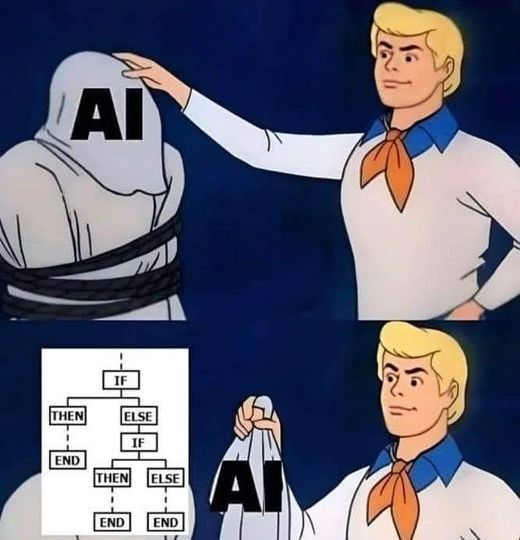

¿La inteligencia artificial era solo if/else?

¿Un conjunto de condiciones programadas es Machine Learning? ¿Todo programa con if/else es IA?

¿Un conjunto de condiciones programadas es Machine Learning? ¿Todo programa con if/else es IA?